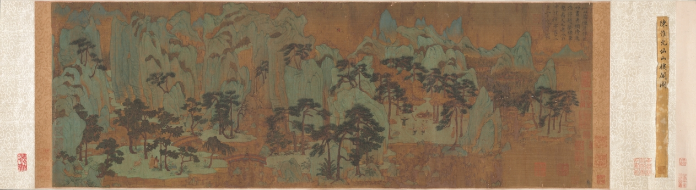

Project · 2026 春 · 第 5 组
EchoScroll
Where Chinese Painting Listens to Itself.
让一幅中国画自己讲述它的音乐。EchoScroll 把视觉语义、艺术史语境与情感几何对齐到同一个潜在空间，再交给可控的 MusicGen 完成配乐生成。我们不再用"中国风"标签敷衍古画，而是让每一卷纸都得到与它气韵相称的声音。




云山图
回声画乐
展卷